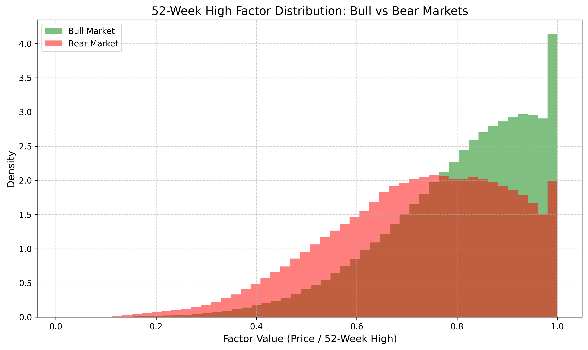
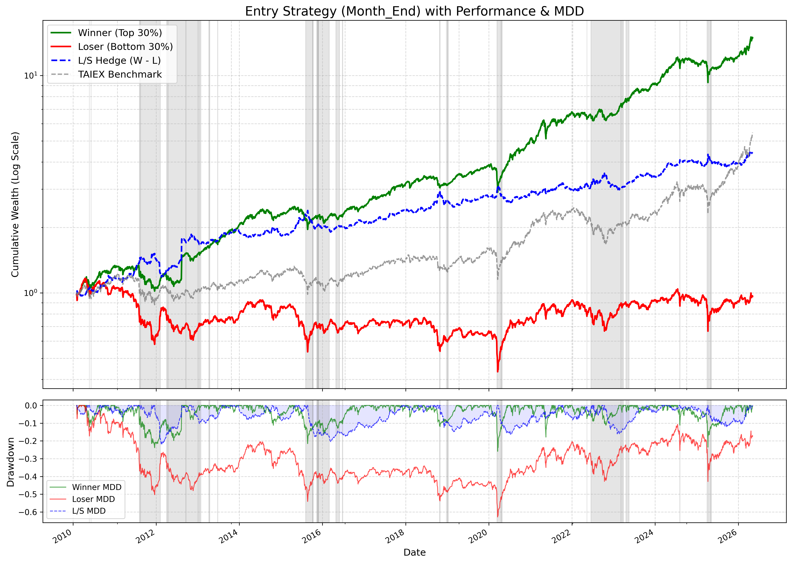
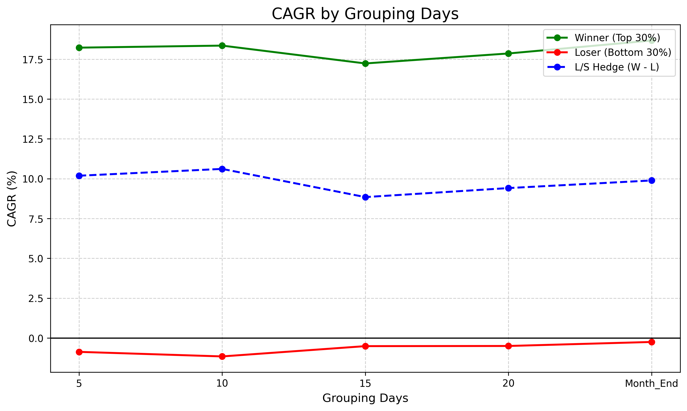
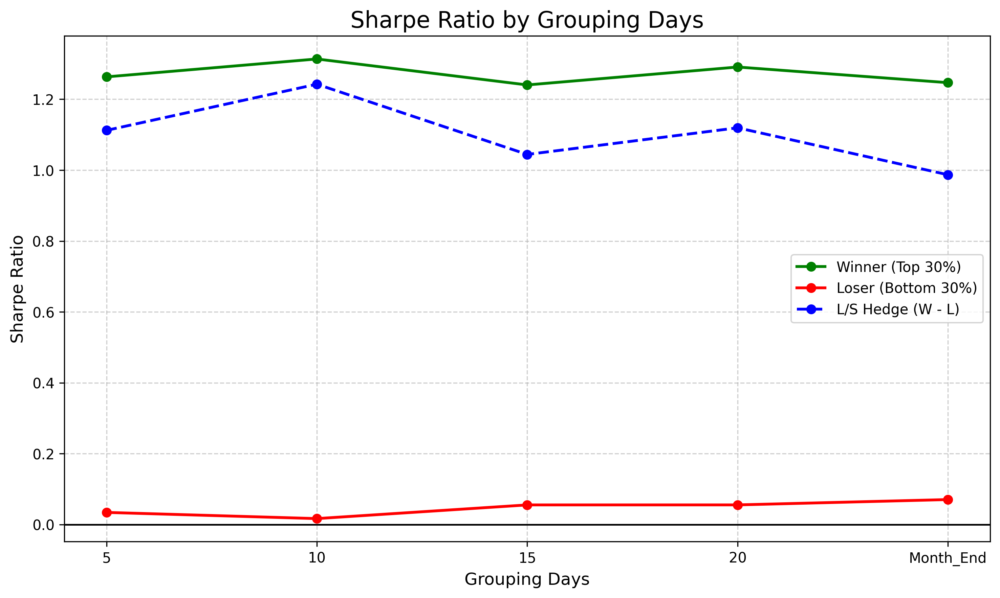
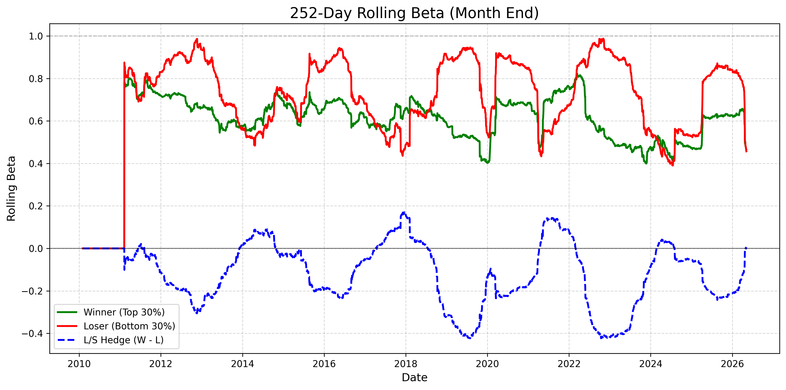
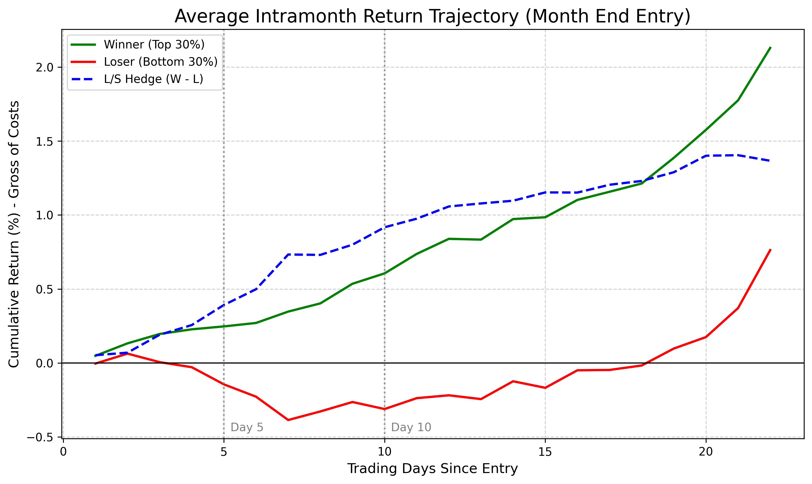

台股52週高點因子投資策略回測
一、 摘要 (Abstract)
傳統動能投資策略（Momentum Investing）多依賴個股或產業過去的歷史報酬來預測未來走勢，然而此類策略常在長期出現反轉現象。本研究基於 George 與 Hwang (2004) 的研究框架，探討「52週高點（52-Week High）」因子是否在台灣上市公司上一樣有作用。
原論文指出，當股價接近 52 週高點時，投資人會產生「錨定效應（Anchoring Bias）」，對利多消息反應不足，從而產生具備持續性且長期不反轉的價格動能。考量到台股散戶比例較美股為高，市場非理性行為更為普遍，尤其在網路論壇上，投資人常因股價已高而卻步，因此預期錨定效應對台股投資人心理的影響將更為嚴重。
本研究不僅於實證資料中重現該因子之有效性，更進一步擴展原論文框架，納入「月中不同交易日進場之穩定性測試」、「事件研究法（月中累積報酬軌跡）」以及「動態滾動風險指標（Rolling Sharpe / Beta）」，以驗證該因子在台股上的穩健性及曝險程度。
二、 研究主題與動機 (Research Topic & Motivation)
1. 研究主題
本研究旨在驗證「52週高點比率（Current Price / 52-Week High）」作為選股因子之有效性，並構建多空對沖組合（Long Winners / Short Losers），以評估其創造超額報酬（Alpha）的能力。
2. 研究動機
- 突破傳統動能策略的限制：傳統由 Jegadeesh 與 Titman (1993) 提出的動能策略（買入過去 6 個月贏家、賣出輸家）雖具備中期獲利能力，但在 3 到 5 年後會遭遇顯著的價格反轉。George 與 Hwang 發現，基於 52 週高點的動能預測在長期並「不會」反轉，這暗示了短期動能與長期反轉可能是兩個獨立的現象。
- 行為財務學的實證：投資人為何會對公開資訊反應不足？心理學中的「錨定與調整偏誤（Adjustment and anchoring bias）」指出，人們常依賴特定參考點進行決策。當股價創新高時，投資人往往以此為錨，不願用更高價格追買，這為動能策略提供了堅實的行為學基礎。
- 實務交易的優化需求：學術論文多假設月底進場且未考量雙邊交易成本。本研究動機之一，是透過涵蓋不同進場日、真實手續費與策略曝險，測試因子的穩健性及轉化為可落地的交易系統。
三、 研究方法與回測設計 (Methodology & Backtest Design)
本研究結合學術理論與實務回測框架，具體設計如下：
1. 因子建構 (Factor Construction)
- 根據原論文定義，定義因子為 Factori,t = Pi,t / Highi,t。
- 其中 Pi,t 為當日收盤價，Highi,t 為過去 252 個交易日（約一年）的最高收盤價。
- 為了確保高點數值的穩定性，設定
MIN_PERIODS = 252，即個股至少須具備一年的歷史資料才會被納入計算池。
2. 投資組合建構 (Portfolio Construction)
- 分位數篩選：在每個觀測日，將全市場股票依據 Factor 進行橫截面排序。
- 做多組合（Winner, Top 30%）：買入比值最高（距離高點最近）的前 30% 股票。
- 做空組合（Loser, Bottom 30%）：放空比值最低（距離高點最遠）的後 30% 股票。
- 多空對沖（W_minus_L）：建構買入贏家並放空輸家的自融資投資組合。組合採用等權重（Equally Weighted）配置。
3. 進場機制與成本設定 (Execution & Transaction Costs)
- 進場日敏感度分析（Grouping Days）：本研究主要以原論文提出的月底進場回測結果為主。然而，為檢驗因子是否僅受月底機構作帳（Window Dressing）影響，亦額外測試了每月第 5、10、15、20 個交易日不同選股觀測日。所有進場均於觀測日之「次一交易日」以收盤價執行。
- 交易成本：嚴格設定
COST_RATE = 0.001425（即千分之1.425），且於每次換倉的「期初進場」與「期末出場」各扣除一次，以真實反映台股市場的摩擦成本。 - 無風險利率 (Risk-Free Rate)：為簡化計算，本研究設定無風險利率
Rf = 0，用於夏普比率與索提諾比率等風險調整後報酬指標的計算。
四、 資料範圍 (Data Scope)
- 資料頻率與來源：使用日頻率（Daily）的還原收盤價資料（Adjusted Close）。
- 回測期間：自 2009 年 1 月 1 日起至 2026 年 4 月 30 日。
- 基準指數（Benchmark）：引入台灣加權報酬指數（TAIEX）作為大盤基準，用於計算策略的滾動系統性風險（Rolling Beta）。
五、 資料分析 (Data Analysis)
- 因子分佈檢定：分析 52 週高點比率在多頭與空頭市場中的橫截面分佈（偏態與峰度變化）。
市場狀態 平均偏態 平均峰度 多頭市場 -0.99 1.15 空頭市場 -0.56 0.04 - 樣本存活率：探討每月符合交易資格的股票檔數變化（Winner_Count 與 Loser_Count 的時間序列特徵）。

六、 回測結果 (Backtest Results)
1. 核心績效與風險指標 (Performance & Risk Metrics)
- 本次研究主要評判績效的四大指標：
- 總報酬與年化報酬 (CAGR)：比較 Winner、Loser 與 W-L 對沖組合的長期複利增長。預期 Winner 組合將顯著擊敗 Loser 組合，且 W-L 將創造穩定的正向收益。
- 夏普比率 (Sharpe Ratio)：評估承擔每單位總風險（標準差）所獲得的超額報酬，計算方式為 (Rp - Rf ) / σp，其中 Rp 為投資組合平均報酬，Rf 為無風險利率，σp 為投資組合報酬標準差。
- 索提諾比率 (Sortino Ratio)：評估承擔每單位下行風險（下行標準差）所獲得的超額報酬，計算方式為 (Rp - Rf ) / DR，其中 Rp 為投資組合平均報酬，Rf 為無風險利率，DR 為投資組合報酬的下行標準差。
- 最大回撤 (MDD)：衡量多空對沖組合（W-L）從資產最高價值跌至最低價值時的「最大虧損幅度」，為計算下行風險的另一指標。
- 以月底（Month End）進場為基準，根據回測多空對沖組合（W-L）在此期間展現了穩健的獲利能力。年化報酬率（CAGR）達到了 9.89%，且其承擔的風險相對可控，夏普比率（Sharpe Ratio）為 0.99。即便在市場出現大幅震盪的時期，該對沖組合的最大回撤（MDD）依然能有效控制在 -21.89%，顯示出良好的下檔保護能力。以下為各年度平均月報酬率明細與長期的累積報酬圖（圖片灰色底代表該段時間台灣加權指數回撤 > 15% 以上的時段）：
| 年份 | Winner | Loser | W-L |
|---|---|---|---|
| 2010 | 2.71% | 0.69% | 1.53% |
| 2011 | -1.77% | -3.94% | 1.69% |
| 2012 | 3.29% | 0.96% | 2.02% |
| 2013 | 2.68% | 1.33% | 0.80% |
| 2014 | 1.03% | 0.81% | -0.28% |
| 2015 | -0.16% | -1.35% | 0.75% |
| 2016 | 0.91% | -0.15% | 0.51% |
| 2017 | 2.02% | 0.34% | 1.11% |
| 2018 | -0.00% | -1.26% | 0.85% |
| 2019 | 1.72% | 0.81% | 0.38% |
| 2020 | 2.52% | 1.76% | 0.48% |
| 2021 | 2.54% | 1.64% | 0.32% |
| 2022 | -0.20% | -1.26% | 0.59% |
| 2023 | 2.89% | 1.65% | 0.68% |
| 2024 | 1.85% | -0.05% | 1.30% |
| 2025 | 0.64% | 0.09% | -0.08% |
| 2026 | 4.13% | 1.07% | 2.40% |

（圖：藍線為（W - L）累積報酬圖）
2. 進場日穩健性測試 (Entry Day Robustness)
為了驗證該因子是否僅受限於月底法人作帳效應（Window Dressing），我們進一步測試了不同交易日（5, 10, 15, 20, 月底）進場的表現。結果顯示，無論在哪個日期進場，多空組合皆能穩定維持正向報酬與相似的夏普表現。其中，在月中進場甚至能取得與月底相當或更優的結果。這項「進場日不敏感」的特徵，強力支持了 52 週高點因子背後的「心理錨定效應」是持續存在於市場中的客觀規律。
| 進場日 (Day) | CAGR (Winner) | CAGR (W-L) | Sharpe (W-L) | MDD (W-L) |
|---|---|---|---|---|
| 5 | 18.22% | 10.19% | 1.11 | -21.68% |
| 10 | 18.35% | 10.61% | 1.24 | -22.27% |
| 15 | 17.23% | 8.85% | 1.04 | -21.87% |
| 20 | 17.86% | 9.41% | 1.12 | -21.66% |
| Month_End | 18.67% | 9.89% | 0.99 | -21.89% |

（圖：不同進場日之 CAGR 比較）

（圖：不同進場日之夏普比率比較）
3. 動態風險追蹤 (Rolling Metrics)
- 252-Day Rolling Sharpe / Sortino：觀察策略在不同市場週期（牛/熊市）中的績效穩定度，並透過 60 天平滑處理（Smoothed）消除短期雜訊。在我們研究發現，滾動夏普與索提諾比率也顯示出策略在經歷幾次市場多空循環後，依然能維持強韌的相對獲利優勢。
- 252-Day Rolling Beta：檢驗多空對沖組合（W-L）是否真正達到了市場中立（Market Neutral），即 Beta 值是否穩定圍繞於 0 附近。在本次研究中，多空對沖組合（W-L）的252 日滾動 Beta 走勢長期穩定圍繞在 0 軸附近，證明該策略的確排除了大盤的系統性風險（Market Neutral）

七、 額外測試：事件研究法與持倉優化 (Additional Tests: Event Study)
本研究程式碼特別針對「月底進場（ME）」加入了月中累積報酬軌跡（Intramonth Trajectory）的事件研究分析：
- 研究目的：探討動能效應在進場後的第一日到出場日是如何發酵的。
- 衡量方式：記錄每次進場後第 1 天至出場日的「未扣除交易成本原始平均報酬」。
- 預期發現與應用：若 W-L 的超額報酬主要集中在進場後的前 5 或前 10 天（曲線在此後斜率趨緩或走平），這暗示實務上我們可能不需要持有滿一整個月。投資人可藉由提早獲利了結（縮短 Holding Period）來提高資金週轉率（Capital Efficiency）並降低市場曝險。
- 實測結果與發現：透過檢視 22 日累積報酬軌跡圖，我們發現做多組合（Winner）與多空對沖組合（W-L）在整個持有月內，皆呈現穩定且持續向上的斜率。這表示股價對 52 週高點資訊的消化過程是漸進的，並沒有在進場後前幾天就迅速見頂然後停滯。因此，這證明了實務上我們「維持持有滿一個月」的設定是合理且能完整捕捉動能溢酬的，無需過度擔憂短線的提前反轉。

（圖：藍線為（W - L）平均 22 日累積報酬）
八、 未來研究方向 (Future Directions)
- 樣本池 (Sample Pool)：此研究僅探討在台灣上市之普通股，未來可以考慮納入上櫃股票，觀察策略是否更好或更差。
- 流動性與市值過濾：本回測尚未針對股票的日均成交值或市值進行分層。未來應加入價格或成交量濾網，以確保 Bottom 30% 的 Loser 組合在實務上具有足夠的融券放空額度。
- 結合其他因子：探討 52 週高點因子是否能與價值因子（Value）或基本面盈餘動能（Earnings Momentum）結合，形成勝率更高的多因子模型。